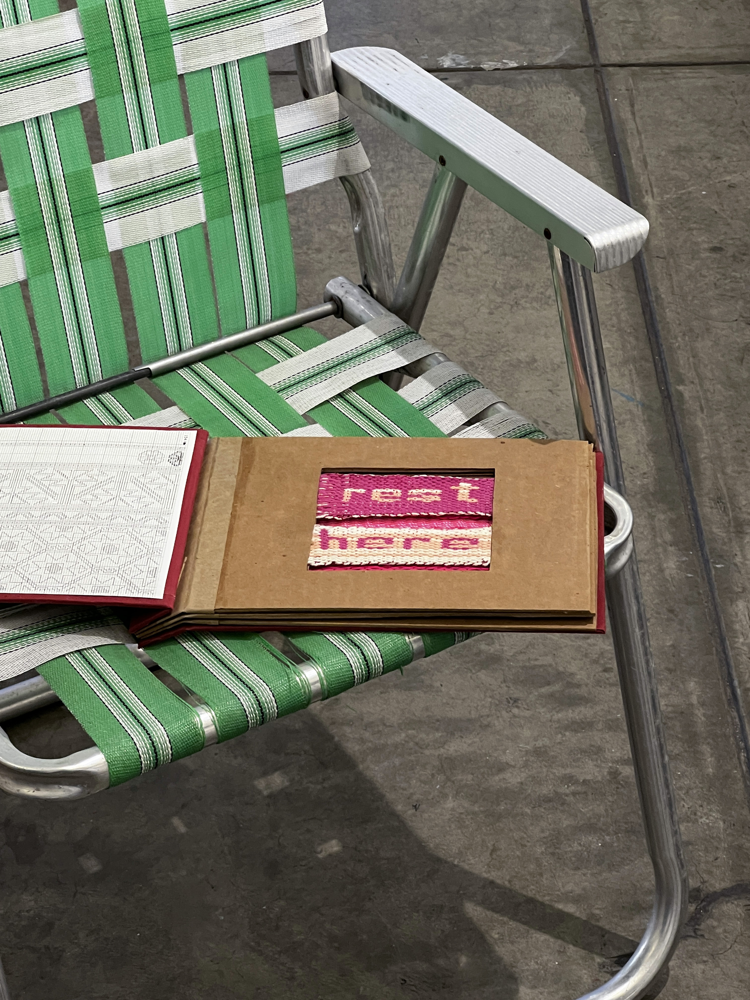

Projects

rest here
Cotton yarn, nylon thread, cardstock, bookcloth
As a preliminary step toward revamping an aluminum lawn chair with new straps, this sample book presents possible color and fiber combinations for those replacements. These explorations aim to balance strength, durability, and aesthetic appeal.
The piece draws inspiration from the Bauhaus tradition of tubular steel chairs with woven surfaces, from the "primitive" backstrap and tablet-weaving techniques used by Anni Albers, Sheila Hicks, and others, and from more contemporary uses of text in woven forms by artists such as Josh Faught.
The process of backstrap weaving with the textual message served as a reminder to slow down, savor the making, and maintain close awareness of my body, with particular attention to my hands, injured and otherwise. Once the larger project is complete, the finished chair will serve as a physical reminder of this principle.

untitled
acrylic and oil paint on canvas
giant self-portrait